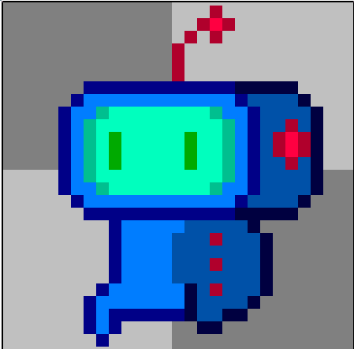

Git-ing started with Git
About me

Web Hoster
Software Developer
Video Game Enthusiast
excaliburjs.com
What is git?
- Version Control System
- Free and open source
- Distributed in nature
- Similar in concept to Hg (Mercurial)
Where do I "git" it?
There are multiple git clients out there for your platform. Use what makes you happy
- Command Line
- Github for Windows
- Visual Studio
Different from TFS?
- Distributed vs. Centralized
- File system is the source of truth
- Branches are cheap
- Easy context switching
A brief history of Git
Developed originally by Linus Torvalds of Linux fame, when the proprietary DCVS tool 'BitKeeper' that the Linux community was using, became no longer free of charge.
Used to maintain the Linux kernel itself, it needed to be robust enough to handle large projects
Starting off with git
Some terminology first...
- Commit - All changes to files are stored as commits. Git is all about manipulating series of commits
- Branches - Are just a series of commits, they tell a story about code over time and are given a name. Often used for organizing work or features
- Repositories - Also known as "repos" Are full copies of the code base, commits, branches, etc.
- Cloning - Creates a local copy on your machine of a remote repository, including all history
How does Git work?
- Commits are snapshots of the filesystem at a point in time
- Everything is SHA1 check-summed before it is stored, so any change is detected by git
- Git adds data for nearly every command
3 Areas

Git for the first time
Identity
$ git config --global user.name "John Doe"
$ git config --global user.email johndoe@example.comList settings
$ git config --list
user.name=John Doe
user.email=johndoe@example.com
color.status=auto
color.branch=auto
color.interactive=auto
color.diff=auto
...Clone a repo
$ git clone https://github.com/excaliburjs/Excalibur.git$ git clone git@github.com:excaliburjs/Excalibur.gitOr initialize a new repo
$ git initCheck status
$ git status
On branch master
Your branch is up-to-date with 'origin/master'.
nothing to commit, working directory cleanStaging and Commiting changes
Ignoring files
Pushing changes
TODO Remotes $ git remote -v $ git push origin masterPulling and Fetching changes
View history
Branching
What is "head" Creating branches Switching branches Why are branches cheap https://git-scm.com/book/en/v2/Git-Branching-Branches-in-a-NutshellMerging
Fast forward merge 3-way merge (results in a merge commit) https://git-scm.com/book/en/v2/Git-Branching-Basic-Branching-and-MergingRebasing
https://git-scm.com/book/en/v2/Git-Branching-RebasingInteractive Rebasing
https://git-scm.com/book/en/v2/Git-Branching-RebasingUndoing mistakes
Revert vs. Reset
Cherry Pick
Tags
https://git-scm.com/book/en/v2/Git-Basics-TaggingGit Alias for the Rich and famous
$ git config --global alias.co checkout
$ git config --global alias.br branch
$ git config --global alias.ci commit
$ git config --global alias.st status